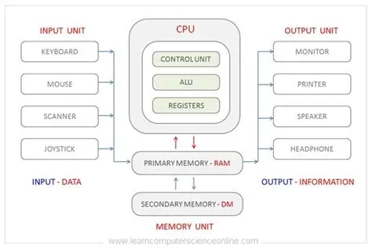

Return
2025-08-28: Computer Archictecture Overview

Computer
Computers are devices that process data, so a computer can be numerous of devices
Monitor
Motherboard
CPU(Central processing Unit, prcessor)
Expansion cards (Video Card, Network Card)
Power Supply
CD/DVD drive
Hard disk drive
keyboard
Mouse
System unit (the "Case")
User Input Controls
Types of Systems
RAM
Random Access Memory, which is short term memory
Hard Drive(USB/CD/DVD)
Long Term Memory
Computer
Computer needs both hardware and software
CPU (Central Processing Unit
Where the "work" of computing happens
Storage
Long Term Memory, which is the Hard drives
Peripherals
Extra Devices that help us interact with a keyboard like a monitor, mouse and speakers
Binary
Software = Data = binary
Data Representation
Refers to the form in which data is stored, processed and transmitted
Organization of data
Organizing logically
Types of Storage
Networking
Servers
Cloud Computing
Data
Data is shared across everywhere other than just the pc
Local Storage though, is data that is stored on the computer and directly
Cloud
Cloud storage is data on distant servers
Can be accessed everywhere with Internet
Environmental Cost of the cloud
Alot of water to cool
Uses alot of land